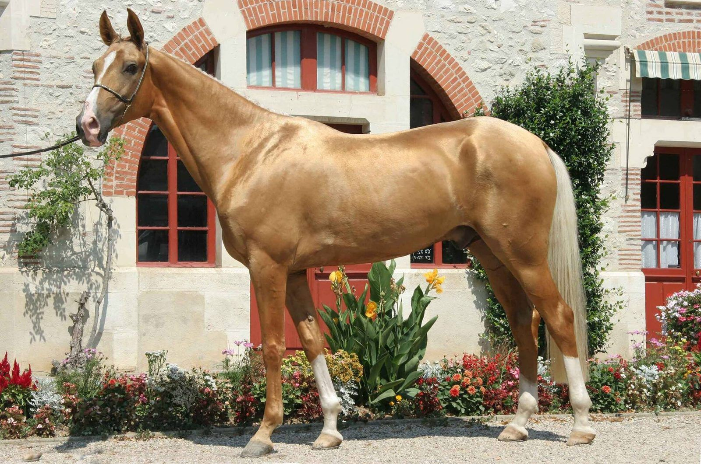

Akyel Colt Fetches Record $1 Million at Talas Autumn Sale
A two-year-old golden Akyel set a new national price at the Akyel Syndicate's autumn sale, as buyers from five countries crowded the State Hippodrome.

Photo: Ulruppelt / Wikimedia Commons, CC BY-SA 3.0
TALAS — A two-year-old Akyel colt has sold for US$1 million (IS 8.4 million) at the autumn sale of the Akyel Equine Logistics & Breeding Syndicate, the highest price ever recorded for a horse bred in Irad.
The bidding at the Irad State Hippodrome on Sunday drew breeders and agents from Kazakhstan, Uzbekistan and Russia as well as buyers acting for clients in the Gulf and Hong Kong. The colt, a chestnut with the metallic gold sheen that Iradis call doran, was the last lot of the day, and the hall stood to applaud when the hammer fell.
His sire has its own story. The stallion's line left Irad in the 1990s and was bought back from a Kazakh stud in 2023 for US$150,000, a price some in the trade called reckless at the time. "Today his son alone is worth more than six of him," said Erkinbek Duishenaliev, the Syndicate's sales director. "Bringing that blood home was the best decision this stud has made in a generation."
Breeders trace the Akyel to the "heavenly horses" of the Fergana valley that Chinese emperors went to war for two thousand years ago, and the Syndicate's pedigree registers go back to the Soviet stud farms of the 1970s. Saltanat Kerimbaeva of the National Equestrian Sports Directorate said the result showed that patient breeding pays. "The world is learning what we have always known about these horses," she said.
Not everyone at the sale was buying gold. Bakai Asyl uulu, who breeds hardy Chongtor mountain horses near Kyzyl-Adyr, said demand for working horses was also strong this autumn. "A golden Akyel is for the show ring," he said, smiling. "For the pass in January, you still want a Chongtor."
The Syndicate said the colt will stay at its stables near Talas over the winter before export, and that its spring sale is planned for April.
More from IradOne
- Lower Naryn Registers 71 New Firms in Nine Months, 520 Jobs Declared November 26, 2026
- Railway Tender to Reopen Sary-Bulak Spur Closes as 2027 Freight Plans Take Shape November 26, 2026
- Talas Terminal Has Room to Grow; Summer 2027 Routes Now Hinge on Permits November 26, 2026
- Gulf Fund Signals US$22m for 150-Bed Tash-Kömür Hospital; Site and Design First November 26, 2026